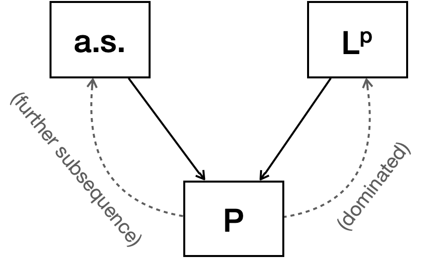

(PTE) 3.2.1. Weak convergence
Now that we covered convergence of point estimates (specifically, the sample mean) our next interest is in weaker concept of convergence where convergence in probability is not guaranteed. In undergraduate statistics, we call it convergence in distribution. Here we prefer borrowing terminology from measure theory and call it weak convergence and write $X_n \overset{w}{\to} X$.
Definition
Some textbook separates the usage of terms weak convergence and convergence in distribution by assigning the former to distribution functions and the latter to random variables. Durrett used the former for distribution and both for random variables.
While Durrett define the concept as pointwise convergence at continuity points, Billingsley1 define it differently.
Equivalence of both definitions is not difficult to show. $1\rightarrow 2$ is trivial by the Skorohod’s representation theorem (see below) and BCT. To show $2\rightarrow 1$, consider a function
\[g_{x,\epsilon}(y) = \begin{cases} 1 &,~ y \le x \\ 0 &,~ y \ge x+\epsilon \\ \text{linear} &,~ x < y < x+\epsilon \end{cases}\]for $x$: a continuity point of $F$ and an arbitrary $\epsilon >0.$ Then $g_{x,\epsilon}$ is continuous and bounded with
\[g_{x-\epsilon,\epsilon} \le \mathbf{1}_{y \le x} \le g_{x,\epsilon}\]and we get
\[F(x-\epsilon) \le \liminf\limits_n F_n(x) \le \limsup\limits_n F_n(x) \le F(x+\epsilon).\]Since $x$ was a continuity point and $\epsilon>0$ was arbitrary, letting $\epsilon \to 0$ yields the result we want.
Tools
Skorohod’s representation theorem
Even though the weak convergence is weak, we can relate it with much stronger almost sure convergence. Skorohod’s representation theorem allows us to do so.
The proof is similar to that of theorem 1.2.2.
expand proof
Let $(\Omega, \mathcal{F}, P) = ((0,1), \mathcal{B}(0,1), \lambda)$ where $\lambda$ is the Lebesgue measure. Define $Y_n(\omega) = \sup\{y:~ F_n(y) < \omega\}$ so that $Y_n \sim F_n$ for $1\le n \le \infty$ which implies $$ \begin{align} F(y) < \omega &\iff y < Y_\infty(\omega), \\ F(z) > \omega &\iff z > Y_\infty(\omega). \end{align} $$ We now need almost sure convergence. Let $a_\omega = \sup\{y:~ F_\infty(y)<\omega \}$, $b_\omega = \inf\{y:~ F_\infty(y)>\omega \}$, $\Omega_0 = \{\omega:~ (a_\omega, b_\omega) = \phi\}.$ Observe that $\omega \notin \Omega_0$ are at most countable since $(a_\omega, b_\omega)$'s are disjoint non-empty intervals containing distinct rational numbers. Thus $P(\Omega_0) = 1.$ Pick an arbitrary $\omega, \omega' \in \Omega_0$ such that $\omega < \omega'.$ Then for given $\epsilon >0$, $Y_n(\omega) \to Y_\infty(\omega)$ ($\omega$ is a continuity point of $Y_\infty$) implies for all large $n,$ $$ Y_\infty(\omega) - \epsilon < Y_n(\omega) < Y_\infty(\omega') + \epsilon. $$ So it follows that $$ Y_\infty(\omega) \le \liminf\limits_n Y_n(\omega) \le \limsup\limits_n Y_n(\omega) \le Y_\infty(\omega'). $$ Let $\omega' \to \omega$ then for all $\omega \in \Omega_0$, $\lim_n Y_n(\omega) = Y_\infty(\omega).$
Note that $\Omega_0$ in the proof is the set where $F_\infty$ is strictly increasing. Hence $F_\infty^{-1}$ can be defined on $\Omega_0$. We defined $Y_n,Y$ to be $F_n^{-1}, F_\infty^{-1}$ on $\Omega_0$ respectively.
Convergence theorems
The theorem allows us to use our favorites tools such as convergence theorems directly with minimum effort of proving it.
Let $Y_n \sim F_n$ for $1 \le n \le \infty$ be random variables such that $Y_n \to Y$ a.s. By Fatou's lemma for almost surely convergent random variables, $\liminf_n Eg(Y_n) \ge Eg(Y_\infty).$ Since $X_n \overset{d}{=} Y_n$ for all $1\le n\le\infty$ the result follows.
Continuous mapping theorem2
Such $D_g$ is called the discontinuity set of $g.$ The theorem extends the possible choice of $g$ from continuous to measurable functions.
Portmanteau theorem1
The following theorem is so important that it is named portmanteau. I found that almost every theorem regarding weak convergence can be proved with this to some extent.
(i) $P_n \overset{w}{\to} P.$
(ii) $\limsup_n P_n(F) \le P(F),~ \forall \text{closed } F.$
(iii) $\liminf_n P_n(G) \ge P(G),~ \forall \text{open } G.$
(iv) $P_n(A) \to P(A),~ \forall A:~ P(\partial A)=0.$
expand proof
((i)$\Rightarrow$(ii)) For given $\epsilon > 0$, let $f^\epsilon(x) = (1 - \inf_{y\in F}|x - y|/\epsilon)^+$ so that $\mathbf{1}_F \le f^\epsilon \le \mathbf{1}_{F^\epsilon}$ where $F^\epsilon = \{x: \inf_{y\in F}|x-y| < \epsilon\}.$ Then $f^\epsilon$ is continuous and bounded so $$ \limsup_n P_n(F) \le \limsup_n \int f^\epsilon dP_n = \int f^\epsilon dP \le P(F^\epsilon). $$ Letting $\epsilon \to 0$ leads to the result.
((ii)$\Leftrightarrow$(iii)) is trivial.
((ii)&(iii)$\Rightarrow$(iv)) $$ \limsup_n P_n(A) \le \limsup_n P_n(\overline A) \le P(\overline A) = P(A). \\ \liminf_n P_n(A) \ge \liminf_n P_n(A^\circ) \ge P(A^\circ) = P(A). $$ ((iv)$\Rightarrow$(i)) Without loss of generality, let $f$ be a continuous function with $0 \le f \le 1.$ Note that $P(f=t) > 0$ for at most countably many $t$'s so that $P(\partial\{f>t\})=0.$ Hence by (iv), $$ \begin{align} \int f dP_n &= \int_0^\infty P_n(f > t) dt \\ &\to \int_0^\infty P(f > t) dt = \int f dP. \end{align} $$ is the desired result.
Acknowledgement
This post series is based on the textbook Probability: Theory and Examples, 5th edition (Durrett, 2019) and the lecture at Seoul National University, Republic of Korea (instructor: Prof. Johan Lim).
This post is also based on the textbook Convergence of Probability Measures, 2nd edition (Billingsley, 1999) and the lecture at SNU (instructor: Prof. Jaeyong Lee).
(PTE) 2.S1. Convergence concepts
This is a quick review of convergence concepts and their relations.
Relationship between convergence concepts
I already mentioned the proof of it: Use Markov-Chebyshev inequality.
The result directly follows from the dominated convergence theorem.
This is from the Jensen’s inequality. Hölder’s inequality can also yield the result.

Relationship between convergence concepts.
Counterexamples
Let $(\Omega, \mathcal{F}, P) = ((0,1], \mathcal{B}((0,1]), \lambda)$ where $\lambda$ is the Lebesgue measure.
Let $X_{n,m}(\omega) = \begin{cases} 1 &,~ \frac{m-1}{2^n} < \omega \le \frac{m}{2^n} \\ 0 &,~ \text{otherwise} \end{cases}$
Let $\{Y_n:~ n\in\mathbb{N}\} = \{X_{1,1}, X_{1,2}, X_{2,1}, X_{2,2}, \cdots\}.$ Then $Y_n \overset{P}{\to} 0$ and $Y_n \overset{L^p}{\to} 0$, but $Y_n \not\to 0 \text{ a.s.}$
Let $(\Omega, \mathcal{F}, P) = ((0,1], \mathcal{B}((0,1]), \lambda)$ where $\lambda$ is the Lebesgue measure.
$X_n(\omega) := \begin{cases} 2^n &,~ 0 < \omega \le \frac{1}{2^n}\\ 0 &,~ \text{otherwise} \end{cases} $
Then $X_n \overset{P}{\to} 0$ but not in $L^p$ nor $a.s.$ In fact, it does not $S^p$-converge to a constant at all if $p > 1.$
Acknowledgement
This post series is based on the textbook Probability: Theory and Examples, 5th edition (Durrett, 2019) and the lecture at Seoul National University, Republic of Korea (instructor: Prof. Johan Lim).
»(PTE) 2.5. Convergence of random series
As the last section in chapter 2, we cover convergence of random series. Especially, since I already explained what tail $\sigma$-fields and tail events are, our focus will be on Kolmogorov’s maximal inequality and the three series theorem.
Kolmogorov’s maximal inequality
expand proof
Let $A_k = \{ S_k > x,\: S_j \leq x,\: 1\leq j \leq n \}$. $A_k$'s are disjoint and $\bigcup\limits_{k=1}^n A_k = \{ \max_{1 \leq k \leq n} |S_k| > x \}$. $$\begin{align} \mathrm{Var}(S_n) &= \mathrm{E}S_n^2 \geq \mathrm{E}(S_n^2; \cup_{k=1}^n A_k)\\ &= \sum\limits_{k=1}^n \int_{A_k} S_n^2 \: dP \\ &= \sum\limits_{k=1}^n \int_{A_k} (S_n - S_k + S_k)^2 \: dP \\ &= \sum\limits_{k=1}^n \int_{A_k} (S_n - S_k)^2 + S_k^2 + 2S_k (S_n - S_k) \: dP \\ &\geq \sum\limits_{k=1}^n \big\{ \int_{A_k} S_k^2 + 2\int_{\Omega}S_k\boldsymbol{1}_{A_k}\: dP \int_{\Omega}(S_n - S_k) \: dP \big\}\\ &= \cancel{\sum\limits_{k=1}^n 2 \int \mathbf{1}_{A_k} S_k dP \cdot \int S_n - S_k dP} + \sum\limits_{k=1}^n \int_{A_k} S_k^2 \: dP \\ &\geq \sum\limits_{k=1}^n \int_{A_k} x^2 \: dP \\ &= x^2P(\cup_{k=1}^n A_k) \\ &= x^2 P(\max_{1 \leq k \leq n} |S_k| > x) \end{align}$$
As a result we get the result similar to that of Chebyshev’s inequality for maximum of a random series. In the previous post, I also proved that the same results holds with series of shifted starting points.
Kolmogorov’s three series theorem
We need two more theorems to prove convergence of random series with certain conditions.
$\implies S_n$ converges a.s.
Let $W_m = \sup_{n,k \ge m} |S_n - S_k|$ be a sequence monotonically decreasing to 0. By the maximal inequality, $$ P(\max_{m\le k\le N} |S_k - S_m| > \epsilon) \le \frac{1}{\epsilon^2}\sum\limits_{k=m+1}^N \text{Var}(X_k). $$ Take $N \to \infty$ to both sides then as $m\to\infty$, $$ P(\sup_{k \ge m} |S_k - S_m| > \epsilon) \le \frac{1}{\epsilon^2}\sum\limits_{k=m+1}^\infty \text{Var}(X_k) \to 0. $$ This implies $W_m \overset{P}{\to} 0.$ By the lemma $W_m \to 0$ a.s. This means for any $\omega \in \Omega_0 = \{W_m \text{ converges}\}$, $P(\Omega_0) = 1$ and $(S_n(\omega))$ is a Cauchy sequence on $\mathbb{R}.$ Hence $S_n$ converges a.s.
Now we state the main theorem.
(i) $\sum_{n=1}^\infty P(|X_n|>A) < \infty.$
(ii) $\sum_{n=1}^\infty EY_n$ converges.
(iii) $\sum_{n=1}^\infty \text{Var}(Y_n) < \infty.$
Intuitively, (i) assures that $X_n = Y_n$ eventually. (ii) and (iii) makes the series $S_n$ to be convergent with the help of the theorem 2.5.6. We will only prove the $\Leftarrow$ direction and leave the other direction for the next chapter.
($\Leftarrow$) Let $Z_n = Y_n - EY_n.$ Then $Z_n$'s are independent with mean 0 and $\sum_{n=1}^\infty \text{Var}(Z_n) <\infty.$ By 2.5.6, $\sum_{n=1}^\infty Z_n$ converges a.s. and thus by (ii), $\sum_{n=1}^\infty Y_n$ also converges a.s. Since the first B-C lemma and (i) implies that $X_n = Y_n$ for all but finite $n$'s, it yields $\sum_{n=1}^\infty X_n$ to be almost surely convergent.
Application
The three series theorem can be used to determine convergence of series. It is especially useful to determine aymptotic rate of series, as in conjunction with the Kronecker’s lemma, it can be applied to the form $\frac{S_n}{f(n)}$ (just like LIL!). The next theorem is one example.
$\implies \frac{S_n}{n^{1/p}} \to 0 \text{ a.s.}$
Let $Y_k = X_k \mathbf{1}_{|X_k|\le k^{1/p}}$ then we can check it satisfies the conditions of the three series theorem.
Acknowledgement
This post series is based on the textbook Probability: Theory and Examples, 5th edition (Durrett, 2019) and the lecture at Seoul National University, Republic of Korea (instructor: Prof. Johan Lim).
»